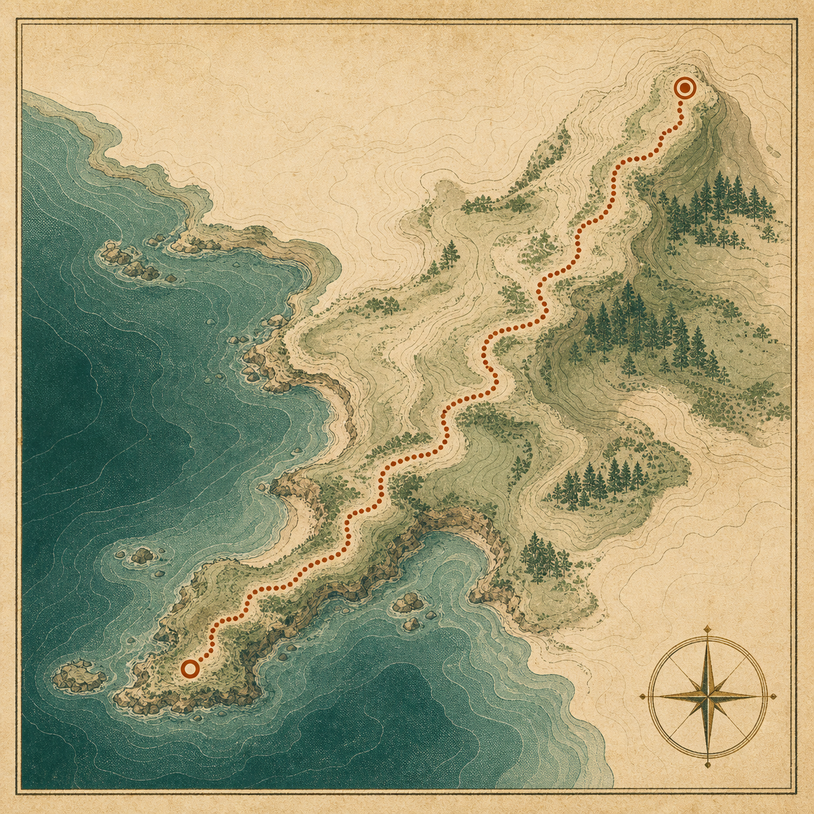

Unit 01 · 20 min
先找到北：方向与参照物
认识指北针、方位词和地标，理解“我在哪”为什么是读图的第一个问题。
含 1 个纸上练习进入课时 →
Atlas Primer · Volume I
从方向、比例到空间判断
%SITE_TAGLINE% 本课程以一张虚构的海岸步行图为线索，带你理解地图如何压缩世界、标记方向，并帮助我们做出可解释的路线选择。

PLATE 01 · DEMOCourse plates
每一课解决一个明确问题，并留下可复用的观察方法。所有地图、坐标和数字均为课程演示。
Unit 01 · 20 min
认识指北针、方位词和地标，理解“我在哪”为什么是读图的第一个问题。
Unit 01 · 18 min
把图上距离换算成现实距离，辨别数字比例尺与线段比例尺各自的优势。
Unit 02 · 24 min
读懂道路、水系和等高线，观察符号之间的关系，而不是孤立记忆颜色。
Unit 02 · 28 min
结合方向、距离和坡度比较两条路线，并写下你的判断依据与不确定性。
Field kit
不需要专业设备。一张纸、一支笔，以及愿意把“看见”写成“依据”的耐心，就足以完成全部练习。
Field log
此清单仅保存在当前页面状态，刷新后重置。
尚未标记准备项。